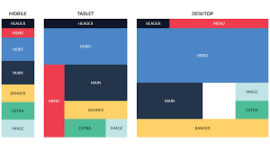

Flex Box y CSS Grid.
¿Que es Flex Box?
En los principios de CSS era muy común ver la propiedad float en los archivos style.css y aunque esta propiedad fue creada para especificar si un elemento debe salir del flujo normal y situarse a la izquierda o derecha del contenido y el texto cercano acoplarse o no a dicho elemento, fue utilizada para crear disposiciones de elementos habiendo texto o no involucrado. Pero eso es cosa del pasado con Flexbox... Flexbox es un módulo de diseño de CSS3 que se creó para mejorar la forma en la que se hace diseño responsive, evitando así el uso de float, escribiendo menos código y facilitando el posicionamiento de elementos, incluso no teniendo noción del tamaño de éstos. Básicamente la idea de Flexbox es poder alterar el ancho, alto y posicionamiento de elementos de la mejor manera con el espacio del que disponemos. Cada Elemento-Flex está definido por sus dimensiones, anchura(tamaño principal) y altura(tamaño secundario) que dependen del eje principal y el eje secundario. Si queremos utilizar las propiedades de Flexbox tendremos que definirlo mediante la propiedad display y su valor flex o inline-flex dentro del selector que nosotros definamos que es nuestro elemento padre o Contenedor-Flex.
¿Que es Flex Box?, (Buenos Aires - Argentina, Anónimo, 2014).

Juan Centeno. (5 de marzo del 2017). ¿Que es Flex Box?. Recuperado de https://www.google.com/url?sa=i&url=https%3A%2F%2Fjuancenteno.info%2Fflex-box%2F&psig=AOvVaw3v2D7LoY7qo7kslH_b_nG-&ust=1615603699252000&source=images&cd=vfe&ved=0CAIQjRxqFwoTCJDQs47gqe8CFQAAAAAdAAAAABAD
¿Ques es CSS Grid?
Grid es uno de los nuevos valores de HTML5 que podemos dar a la propiedad display de un elemento, y que nos permite maquetar las páginas web de una manera mucho más fácil que se hacía con la forma tradicional. Con Grid hacemos que un elemento contenga la propiedad display:grid, lo que nos permitirá maquetar de una forma mucho más fácil y potente que con cualquier otro tipo de propiedades. Esto es así porque, al contrario que en otras formas de maquetación, en Grid podemos establecer tanto las filas como las columnas que va a tener el diseño, maquetación o layout, además no sólo en una dimensión, como con Flexbox, sino que vamos a poder especificar la estructura en dos dimensiones.Al ser una especificación estable, estándar y soportada por prácticamente todos los navegadores modernos (y si no, siempre podemos utilizar los polyfills) se considera realmente CSS, por lo que se puede utilizar en todos los sitios donde ya se utilice código CSS: sitios estáticos, programación con un lenguaje determinado, un framework o para cualquier tipo de dispositivos (escritorio, móviles, tablets) o webapps.
¿Que es CSS Grid?, (Juan Diego Pérez, 11 de Marzo de 2019).
Anónimo. Recuperado de https://www.google.com/url?sa=i&url=http%3A%2F%2Fjavadesde0.com%2Fcss-grid-layout%2F&psig=AOvVaw0Xs9Kh38N6GwZxxZy3dyo9&ust=1615603746654000&source=images&cd=vfe&ved=0CAIQjRxqFwoTCNia7fvgqe8CFQAAAAAdAAAAABAD
Diferencias entre Flex Box y CSS Grid.
Como veíamos en ¿Grid o Flexbox? ¿Qué resulta más útil en diseño y maquetación web?, Grid va un paso más allá de Flexbox y utiliza las dos dimensiones mientras que Flexbox aplica sólo una. Con Flexbox sólo podías definir qué es lo que tenían que hacer los items en el eje horizontal o en el eje vertical. Cuando en el eje vertical u horizontal se terminaba el espacio, entonces los items se iban colocando dependiendo de las configuración de los atributos Flexbox. Por ejemplo, en el caso de usar flex-wrap, cuando llegaba un ítem que no cabía en la horizontal, se iba a la siguiente fila. Pero tú no controlas esas dos filas, los propios ítems son los que se van acomodando. Te recomendamos consultar los tutoriales de Flexbox que hemos publicado recientemente.Sin embargo, CSS Grid nos permite trabajar con dos dimensiones y es posible decidir dónde ubicar las casillas, tanto en la horizontal como en la vertical, coordinando perfectamente las dimensiones de cada fila o columna, de manera global o perfectamente independiente. No necesita trucos, ni forzar que se queden sin sitio, Grid realmente ofrece a los diseñadores web el control detallado de la posición y dimensiones de cada elemento en cada eje.